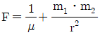
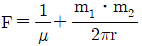
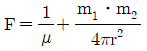
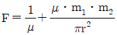
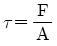
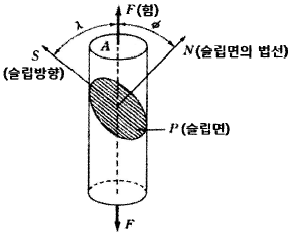
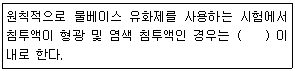

침투비파괴검사산업기사 (2019-04-27 기출문제)
1과목: 비파괴검사 개론
1. 초음파탐상검사의 특징을 기술한 것으로 올바른 것은?
- 초음파탐상시험은 균열면에 가능한 한 평행하게 초음파가 부딪치도록 탐상 조건의 선정에 주의할 필요가 있다.
- 초음파탐상시험은 라미네이션이나 경사진 균열등을 검출할 수 없다.
- 초음파탐상시험은 구조물을 가열했을 때에 생기는 표면 온도분포를 이용하는 방법이다.
- 일반적으로 균열과 같은 면(面)상 결함의 검출에 우수하다.
(정답률: 63%)

2. 다음 중 비파괴검사를 옳게 설명한 것은?
- 용접면을 절단하여 용접 상태를 알아보는 것
- 차후 사용에 영향을 주지 않고 대상체를 시험하는 것
- 에칭(etching)으로 금속 결정조직을 검사하는 것
- 굽힘시험(bend test)을 하여 굽힘면 바깥쪽의 균열을 알아보는 것
(정답률: 93%)
3. 쿨룽의 법칙에서 두 자극 사이에 작용하는 힘(F)을 구하는 식으로 옳은 것은? (단, 자극의 세기는 각각 m1m, m2m, 투자율은 μ, 자극간의 간격은 r이다.)




(정답률: 59%)
4. 단강품에 주로 발생되는 결함 중 초음파 탐상검사 시 표면 근처에서 임상에코가 많이 발생하고 저면에코의 변화에 주의하여 사용주파수를 바꾸어 다른 결함과 구별할 필요가 있는 결함은?
- 편석결함
- 단조균열
- 조대결정립
- 파이프
(정답률: 47%)
5. 와전류탐상시험을 적용하기 가장 곤란한 것은?
- 전도도 측정
- 형상변화의 판별
- 도금의 두께측정
- 내부 결함 검출
(정답률: 67%)
6. Fe-C 평형상태도에서 나타나지 않는 반응은?
- 편정반응
- 포정반응
- 공정반응
- 공석반응
(정답률: 61%)
7. 사용하고 있던 기계 구조용 탄소강 부품을 SM20C에서 SM40로 바꾸었을 경우 인장강도가 연신율의 변화로 옳은 것은?
- 인장강도 : 감소, 연신율 : 증가
- 인장강도 : 증가, 연신율 : 감소
- 인장강도 : 감소, 연신율 : 감소
- 인장강도 : 증가, 연신율 : 증가
(정답률: 74%)
8. 절삭공구로 사용되는 고속도 공구강의 대표적인 것은 18-4-I형이 있다. 이들의 화학성분으로 옳은 것은?
- Cr-Mn-V
- Cr-Ni-V
- W-Cr-V
- Ni-Mn-V
(정답률: 65%)
9. 가공용 황동의 대표로 70%Cu+30%Zn으로 판, 봉, 관, 선 등을 만들어 자동차용 방열기 부품, 소켓, 탄피, 장식품 등으로 가공하여 이용하는 것은?
- naval brass
- muntz metal
- gilding metal
- cartridge brass
(정답률: 64%)
10. 수소저장합금의 기능이 아닌 것은?
- 수소의 분리 및 정제
- 수소가스의 액화와 분해
- 열에너지 저장 및 수송
- 저온, 저압에서의 수소저장
(정답률: 58%)
11. O2나 탈산제를 포함하지 않으며, 진공 또는 CO의 환원 분위기에서 용해 주조 한 것으로 진공관의 구리선 또는 전자기기용으로 사용되는 것은?
- 전로등
- 제련동
- 무산소동
- 강인동
(정답률: 75%)
12. 재료가 어느 응력하에서 파단에 이르기까지 수백 % 이상의 연신율을 갖는 합금은?
- 초경합금
- 초소성합금
- 클래드합금
- 입자분산강화합금
(정답률: 65%)
13. Ni-Cr합금으로 내열성과 내식성이 함께 요구되는 석유화학장치, 약품 및 식품공업에 사용되는 재료는?
- 인바
- 인코넬
- 퍼멀로이
- 플래티나이트
(정답률: 51%)
14. 다음 중 중금속(重金屬, heavy metal)이 아닌 것은?
- Be
- Ni
- Cu
- Cr
(정답률: 68%)
15. 그림은 슬립면 위에 작용하는 전단응력을 나타낸 것으로 임계 전단응력

cosøㆍcosλ 에서 cosøㆍcoλ가 의미하는 것은?
- 버서스 인자(burgers factor)
- 베가드 인자(begard factor)
- 프랭크 인자(frank factor)
- 스미드 인자(schmid factor)
(정답률: 54%)
16. 일반적인 각변형의 방지대책으로 틀린 것은?
- 역변형법을 사용한다.
- 개선 각도는 가능한 작게 한다.
- 용접 속도가 빠른 용접법을 이용한다.
- 판 두께가 얇을수록 첫 패스측의 개선깊이를 작게 한다.
(정답률: 52%)
17. 정격 2차 전류가 200A, 정격사용률 40%인 용접기의 용접전류 150A로 아크 용접을 할 때 허용사용률률(%)은 약 얼마인가?
- 53.3
- 60.0
- 71.1
- 90.0
(정답률: 63%)
18. 일반적인 서브머지드 아크 용접의 특징으로 틀린 것은?
- 비드의 외관이 아름답다.
- 용접 자세의 제한이 없다.
- 용융속도 및 용착속도가 빠르고, 용입이 깊다.
- 용접 진행 상태의 양(良)ㆍ부(不)를 육안으로 확인할 수 없다.
(정답률: 63%)
19. 다음 중 저항용접에 속하는 것은?
- 전자빔 용접
- 테르밋 용접
- 초음파 용접
- 프로젝션 용접
(정답률: 53%)
20. 용접금속 내부에 발생되기 쉽고, 주로 수소가스에 의해 생기는 결함은?
- 기공
- 오버랩
- 언더컷
- 용입불량
(정답률: 83%)
2과목: 침투탐상검사 원리 및 규격
21. 일반적으로 100W의 자외선조사등을 켠 후 한 번에 조작할 수 있는 시간으로 옳은 것은?
- 0.5시간
- 1시간
- 3시간
- 시험시간 동안 켜 놓을 수 있다.
(정답률: 76%)
22. 침투탐상시험에서 접촉각과 표면장력사이의 관계로 옳은 것은? (단, 시험체의 표면장력 ΓS, 침투액의 표면장력 ΓL, 고체/액체 계면장력 ΓSL, 침투액 접촉각 θ이다.)
- ΓL=ΓSL+ΓS cosθ
- ΓSL=ΓS+ΓLcosθ
- ΓS=ΓSL+ΓL cosθ
- ΓSL=ΓL+ΓS sinθ
(정답률: 54%)
23. , 형광침투탐상시험에서 밝기가 각각 50 및 100 푸트캔들인 자외선등을 사용하여 지시를 관찰하였다. 자외선등 밝기 외에는 변화가 없었다면 침투제의 형광의 강도는 몇 배 강하게 나타나는가?
- 1
- 2
- 4
- 16
(정답률: 78%)
24. 침투탐상시험의 침투처리 방법 중 침지법의 특성으로 옳은 것은?
- 구조물의 부분탐상에 효과적이다.
- 침투액의 소모가 크고, 시험부위 이외에 분산하여 세척성을 저하시킨다.
- 소형의 다량 부품에 적합하다.
- 침투액의 재사용이 불가능하다.
(정답률: 80%)
25. 침투액의 물리적 성질에서 침투 성능의 우수성을 결정하는 데 중요한 두 가지 성질은?
- 중력, 적심성
- 적심성, 표면장력
- 밀도, 적심성
- 표면장력, 탄성력
(정답률: 92%)
26. 강 및 비철재료의 압출품, 단조품에 발생한 균열을 찾아내기 위해 침투탐상검사를 할 때 가장 적절한 침투시간은?
- 최소 5분
- 최소 10분
- 최소 25분
- 최소 60분
(정답률: 64%)
27. 다음 중 염색침투탐상시험 시에 의사지시의 원인이 될 수 있는 것은?
- 부품의 복잡한 형태
- 시험자의 손에 묻은 침투제로 시험편을 다룰 때
- 시험체 내부에 존재하는 불연속
- 자외선등에 묻은 먼지
(정답률: 77%)
28. 부적당한 세척으로 인해 거짓지시가 나타났을 때의 조치방법은?
- 검사를 종료한다
- 현상제 적용부터 시작하여 재검사를 실시한다.
- 침투액 적용부터 시작하여 재검사를 실시한다.
- 전처리부터 시작하여 재검사를 실시한다.
(정답률: 87%)
29. 시험체 표면의 과잉침투액을 세척처리한 후에 현상제를 사용하지 않고 지시모양을 관찰하는 현상법은?
- 무현상법
- 건식현상법
- 습식현상법
- 속건식현상법
(정답률: 87%)
30. 후유화성 침투탐상시험에서 유화제의 적용 방법으로 가장 부적절한 것은?
- 솔질법
- 분무법
- 붓기법
- 침지법
(정답률: 65%)
31. 침투탐상 시험 방법 및 침투지시모양의 분류(KS B 0816) 내용 중 잘못된 것은?
- 침투액의 적정온도 범위:15~50℃
- 물 세척 시 최대 수압:275kPa
- 기름 베이스 유화제의 최대 유화시간:5분
- 침투시간 적정범위:5~10분
(정답률: 78%)
32. 침투탐상 시험 방법 및 침투지시모양의 분류(KS B 0816)로 알루미늄 용접부를 FD-A(물베이스 유화제)의 방법으로 침투탐상검사를 하였다. 틀린 것은?
- 수온이 17℃로 측정되어 침투시간 5분을 부여하였다.
- 유화처리는 1분 30초 정도의 시간으로 수행하였다.
- 침투제를 스프레이 노즐을 사용하여 260kPa의 수압으로 세척하였다.
- 건식 현상제를 적용하고 현상시간은 5분을 적용하였다.
(정답률: 58%)
33. 침투탐상 시험 방법 및 침투지시모양의 분류(KS B 0816)의 유화 시간을 규정한 것이다. ()안에 알맞은 유화시간으로 올바른 것은?

- 5분
- 2분
- 1분
- 30초
(정답률: 64%)
34. 침투탐상 시험 방법 및 침투지시모양의 분류(KS B 0816)에서 침투탐상검사 시 침투시간이 다른 형태의 검사품은?
- 주조품
- 압출품
- 단조품
- 압연품
(정답률: 72%)
35. 침투탐상 시험 방법 및 침투지시모양의 분류(KS B 0816)에 따라 사용 중인 침투액을 겉모양 검사를 하여 그 성능을 검사하고자 할 때 폐기의 기준이 되지 않는 것은?
- 현저한 침전물이 생겼을 때
- 형광휘도가 현저하게 저하되었을 때
- 세척성이 현저하게 저하되었을 때
- 온도가 현저하게 낮았을 때
(정답률: 76%)
36. 침투탐상 시험 방법 및 침투지시모양의 분류(KS B 0816) 침투 지시 모양에서 선상결함과 원형상 결함의 구분은 결함 길이가 결함 나비의 몇 배 이상이어야 선상 결함으로 분류하는가?
- 2배
- 3배
- 4배
- 5배
(정답률: 81%)
37. 보일러 및 압력용기에 대한 침투탐상검사(ASME Sec.V, Art.6)에 따라 마그네슘 주조품의 균열을 탐지하고자 할 경우에 최소 침투시간은?
- 3분
- 5분
- 7분
- 10분
(정답률: 67%)
38. 침투탐상 시험 방법 및 침투지시모양의 분류(KS B 0816)에 규정한 탐상제의 관리에 대한 설명으로 가장 옳은 것은?
- 사용 중인 습식 현상제는 소정의 농도로 유지하기 어려우므로 사용 후마다 매법 폐기한다.
- 개방형의 장치에서 탐상제를 사용할 때는 오염의 방지를 위해 별다른 특별한 대책을 취할 수는 없다.
- 사용하였던 세척액은 소정의 농도로 유지하기 위해 상온에서 용기를 개봉하여 보관하여야 한다.
- 기준 탐상제 및 사용하지 않는 탐상제는 용기에 밀폐하여 냉암소에 보관하여야 한다.
(정답률: 81%)
39. 보일러 및 압력용기에 대한 침투탐상검사(ASME Sec.V, Art.6)에 따라 수세성 침투액을 세척할 때 수온은 몇 ℃를 초과해서는 안 되는가?
- 4℃
- 15℃
- 43℃
- 55℃
(정답률: 67%)
40. 보일러 및 압력용기에 대한 침투탐상검사(ASME Sec.V, Art.6)에서 판독에 관한 설명으로 틀린 것은?
- 시험은 어두운 장소에서 실시해야 한다.
- 검사품의 표면에서 최소 800μW/cm2 이상의 강도를 만족해야 한다.
- 형광침투액의 경우 검사원은 눈이 어둠에 적응할 수 있도록 검사 시작 전 적어도 5분 동안 어두운 장소에 있어야 한다.
- 자외선등 사용 시 검사원이 착용하는 안경이나 콘택트렌즈는 감광성이 없어야 한다.
(정답률: 51%)
3과목: 침투탐상검사 시험
41. 각종 침투탐상검사법 중에서 어떤 방법을 선정할 것인지 고려해야 하는 사항이 아닌 것은?
- 시험체의 재질
- 시험장소의 기압
- 예측되는 결함의 종류
- 시험체 표면의 거친 정도
(정답률: 82%)
42. 후유화성 형광 침투탐상시험의 장점이 아닌 것은?
- 유화처리를 필요로 하기 때문에 검사자의 숙련을 요구한다.
- 침투액 증발이 적기 때문에 개발형 침투액통의 사용이 가능하다.
- 미세한 결함이나 비교적 폭이 넓고 얕은 결함의 검출에 알맞다.
- 침투액은 수분의 혼입이나 온도의 영향에 의한 성능의 저하가 적다.
(정답률: 65%)
43. 다음 전처리 방법 중에서 화학적 세척방법이 아닌 것은?
- 알칼리 세척
- 산 세척
- 초음파 세척
- 염기성 세척
(정답률: 86%)
44. 용접 제품에 대한 침투탐상검사를 실시하려고 할 때 주의할 내용으로 틀린 것은?
- 일반 강재의 경우 상온으로 냉각된 후 실시한다.
- 고장력강일 경우 용접 완료 후 1시간이 경과한 후에 실시한다.
- 퀜칭 및 템퍼링한 고장력 강재의 경우 용접 완료 후 2일 이상이 경과한 후 실시한다.
- 용접 공정에 따라 용접 전, 중, 후의 3단계로 실시할 수 있다.
(정답률: 51%)
45. 침투탐상시스템 모니터패널(PSM Panel)의 특징으로 옳지 않은 것은?
- 침투액의 제거성을 정성적으로 평가할 수 있다.
- 결함의 크기와 검출성의 비교가 가능하다.,
- 시험 후 변형되어 자주 교체해야 한다.
- 도금과 블라스팅 처리 등의 기술을 필요로 한다.
(정답률: 72%)
46. 니켈합금 재질의 부품을 침투탐상검사할 때 미리 확인해야 할 탐상제의 성분은?
- 염소
- 불소
- 유황
- 질소
(정답률: 76%)
47. 미세한 결함을 탐상하는 데 적합하지 않지만 다공성 재질로 구성된 시험체를 검사하기 위해 유성 액체에 형광입자를 현탁시킨 용액을 시험면에 적용하여 검사하는 방법은?
- 분말 침투법
- 입자 여과법
- 역형광입자법
- 기체방사성 침투법
(정답률: 68%)
48. 암실의 조도가 10룩스(lx)인 곳에서 형광침투탐상시험을 할 때 검사 표면에서의 최소 자외선 강도(μW/cm2)는?
- 300
- 500
- 600
- 1000
(정답률: 66%)
49. 수세법을 이용하여 세척한 후 습식 현상제를 이용하여 침투검사할 경우에 검사품의 건조시기로 적절한 것은?(오류 신고가 접수된 문제입니다. 반드시 정답과 해설을 확인하시기 바랍니다.)
- 침투처리 후
- 세척처리 후
- 후처리 후
- 전처리 후
(정답률: 70%)
50. 용제제거성 침투탐상검사에 적용하며 일밙적으로 에어로졸 제품에 의한 분무법으로 적용하는 현상법은?
- 습식현상법(aqueous developers)
- 속건식현상법(nonaqueous wet developers)
- 건식현상법(dry powder developers)
- 무현상법(no developers)
(정답률: 68%)
51. 침투탐상검사 후 보고서에 기록하지 않아도 되는 것은?
- 검사자의 성명 및 자격
- 시험체 품명, 모양 및 시험부위
- 현상시간
- 용접방법
(정답률: 83%)
52. 용제제거성 형광침투-무현상법을 사용할 때 적용되는 공정이 아닌 것은?
- 전처리
- 세척처리
- 가열건조처리
- 제거처리
(정답률: 42%)
53. 다음 단조품의 결함 중 침투검사로 잘 나타나지 않는 결함은?
- 단조 랩(Forging Lap)
- 콜트셧(Cold Shut)
- 균열(Crack)
- 단조 터짐(Burst)
(정답률: 67%)
54. 다음 중 X선 필름을 이용한 침투탐상검사법은?
- 기체 방사성동위원소법
- 입자여과법
- 하전 입자법
- 휘발성 액체법
(정답률: 77%)
55. 침투탐상검사에서 침투탕상 시스템 모니터 패널의 균열이 존재하는 면으로부터 확인할 수 있는 것은?
- 세척 특성
- 불순물 함유량 정도
- 결함 검출 감도
- 유화 능력
(정답률: 78%)
56. 다음 중 현상처리가 끝난 부품을 관찰할 때 점검해야 하는 사항이 아닌 것은?
- 시험면의 밝기
- 현상피막의 농도
- 침투제의 오염도
- 현상피막의 균일성
(정답률: 58%)
57. 침투탐상검사 시 사용하는 표준시험편의 특성에 대한 설명으로 틀린 것은?
- B형 시험편은 A형 시험편에 비해 장기간 반복하여 사용할 수 있는 이점이 있다.
- A형 시험편은 B형 시험편에 비해 균열형상이 자연 균열에 가깝다.
- A형 시험편은 B형 시험편에 비해 균열의 크기 조절이 쉽다.
- B형 시험편은 깊이가 일정한 균열을 재현성 있게 만들 수 있다.
(정답률: 60%)
58. 가장 널리 사용되는 일반적인 침투제의 비중으로 옳은 것은?
- 약 0.2
- 약 1.0
- 약 2.0
- 약 3.0
(정답률: 72%)
59. 오스테아니트 스테인리스강 및 티타늄 재질에 대해 침투탐상검사를 할 때 제한되는 불순물의 종류는?
- 유황과 수소
- 염소와 불소
- 탄소와 헬륨
- 수소와 요오드
(정답률: 56%)
60. 알루미늄 재질의 단조품 형태를 검사하여 랩(lap), 균열을 탐지하고자 할 때 적절한 침투시간은?
- 3분
- 5분
- 7분
- 10분
(정답률: 53%)